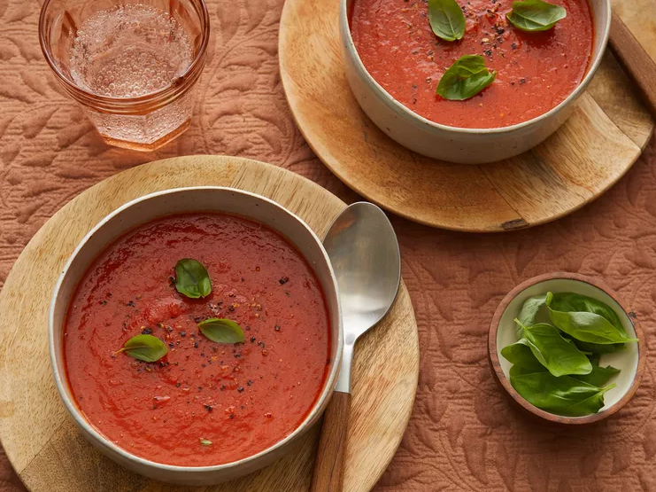

Tomato Soup

It's a simple, delicious and easy Tomato Soup Recipe!
Prep Time: 10 mins
Cook Time: 20 mins
Servings: 6 people
INGREDIENTS
- 1 tablespoon unsalted butter
- 1 tablespoon olive oil
- 1 onion, thinly sliced
- 2 large garlic cloves, peeled and crushed
- 2 cloves garlic, minced
- 2 (28 ounce) cans whole peeled tomatoes
- 1 cup water
- 1 tablespoon sugar
- 1/4 teaspoon celery seed
- 1/4 teaspoon dried oregano
- 1 pinch red pepper flakes
- salt and ground black pepper to taste
DIRECTIONS
- Gather all ingredients.
- Heat butter and olive oil in a large saucepan over medium-low heat. Cook onion and garlic until onion is soft and translucent, about 5 minutes.
- Add tomatoes, water, sugar, celery seed, oregano, red pepper flakes, salt, and pepper. Bring to a boil. Reduce heat, cover, and simmer for 15 minutes.
- Remove from heat and purée with an immersion blender. Reheat soup until warm and season with salt and pepper.
Home